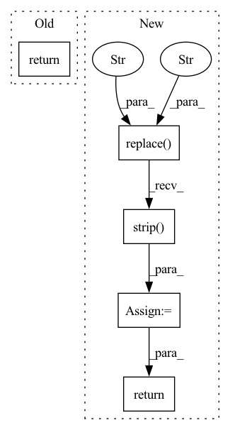

Pattern ID :3374
Before Change
def underscorify(value):
no_punctuation = str(value.translate(str.maketrans("", "", string.punctuation)))
spaces_to_one_underline = re.sub(r"[-\s]+", "_", no_punctuation).strip("-_") // strip gets rid of leading or trailing underscores
return spaces_to_one_underline
// tensor helpers
def differentiable_topk(x, k, temperature=1.):After Change
def underscorify(text):
no_punctuation = text.replace("." , "" )
spaces_to_underline = no_punctuation.replace(" ", "_")
no_lead_trailing_underscores = spaces_to_underline.strip( "-_")
no_commas = no_lead_trailing_underscores.replace(",", "")
return no_commas
// tensor helpers
In pattern: SUPERPATTERN
Frequency: 3
Non-data size: 5
Instances Fragment ID: 13144122
Project Name: lucidrains/big-sleep
Commit Name: 20e4d9d99cb16d1c6d8d6daa50ebbf44ea169078
Time: 2021-03-12
Author: antonwiehe@gmail.com
File Name: big_sleep/big_sleep.py
M Class Name: AnonimousClass
N Class Name: AnonimousClass
M Method Name: underscorify(1)
N Method Name: underscorify(1)
M Parent Class:
N Parent Class:
M File Name: big_sleep/big_sleep.py
N File Name: big_sleep/big_sleep.py
M Start Line: 65
M End Line: 67
N Start Line: 65
N End Line: 69
Before Change
Converts a sequence of tokens (strings for sub-words) in a single string.
return self.tokenizer.convert_ids_to_string(ids)
def get_special_tokens_mask(self,
token_ids_0,After Change
Converts a sequence of tokens (strings for sub-words) in a single string.
tokens = self.convert_ids_to_tokens(ids)
out_string = "".join(tokens).replace("▁" , " ").strip()
return out_string
def get_special_tokens_mask(self,
token_ids_0, Fragment ID: 13144125
Project Name: paddlepaddle/paddlenlp
Commit Name: c00d28fcd89ffb7bddfea14f556957499b2d07b1
Time: 2022-10-16
Author: 380185688@qq.com
File Name: paddlenlp/transformers/mbart/tokenizer.py
M Class Name: MBartTokenizer
N Class Name: MBartTokenizer
M Method Name: convert_ids_to_string(2)
N Method Name: convert_ids_to_string(2)
M Parent Class: PretrainedTokenizer
N Parent Class: PretrainedTokenizer
M File Name: paddlenlp/transformers/mbart/tokenizer.py
N File Name: paddlenlp/transformers/mbart/tokenizer.py
M Start Line: 159
M End Line: 159
N Start Line: 270
N End Line: 272
Before Change
Converts a sequence of tokens (strings for sub-words) in a single string.
return self.tokenizer.convert_tokens_to_string(tokens)
def convert_ids_to_string(self, ids):
After Change
Converts a sequence of tokens (strings for sub-words) in a single string.
out_string = "".join(tokens).replace("▁" , " ").strip()
return out_string
def convert_ids_to_string(self, ids):
Fragment ID: 13144131
Project Name: paddlepaddle/paddlenlp
Commit Name: c00d28fcd89ffb7bddfea14f556957499b2d07b1
Time: 2022-10-16
Author: 380185688@qq.com
File Name: paddlenlp/transformers/mbart/tokenizer.py
M Class Name: MBartTokenizer
N Class Name: MBartTokenizer
M Method Name: convert_tokens_to_string(2)
N Method Name: convert_tokens_to_string(2)
M Parent Class: PretrainedTokenizer
N Parent Class: PretrainedTokenizer
M File Name: paddlenlp/transformers/mbart/tokenizer.py
N File Name: paddlenlp/transformers/mbart/tokenizer.py
M Start Line: 153
M End Line: 153
N Start Line: 263
N End Line: 264